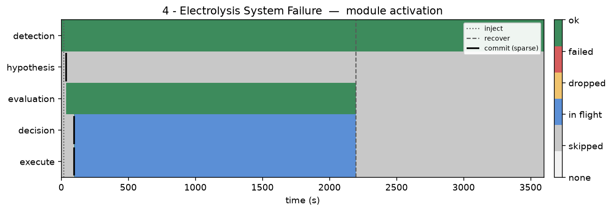
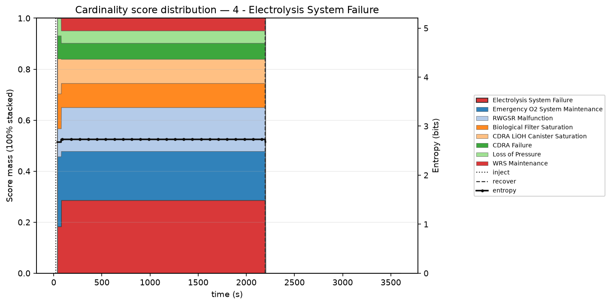

Module activation



| Hypothesis | P | T | P/T |
|---|---|---|---|
| 1. Electrolysis System Failure ★ ▸ | 0.287 | 35 | 0.0082 |
| 2. Emergency O2 System Maintenance | 0.192 | 8 | 0.0240 |
| 3. RWGSR Malfunction | 0.172 | 12 | 0.0143 |
| 4. CDRA LiOH Canister Saturation | 0.095 | 12 | 0.0079 |
| 5. Biological Filter Saturation | 0.095 | 25 | 0.0038 |
| 6. CDRA Failure | 0.063 | 15 | 0.0042 |
| 7. Loss of Pressure | 0.049 | 12 | 0.0041 |
| 8. WRS Maintenance | 0.049 | 14 | 0.0035 |
| 9. Main Cabin Fan Failure | 0.000 | 3 | 0.0000 |
| 10. Reduced Main Cabin Fan #1 Capacity | 0.000 | 4 | 0.0000 |
| 11. TCCS Auxiliary Fan at Reduced Capacity | 0.000 | 4 | 0.0000 |
| 12. PDU 4 Failure | 0.000 | 6 | 0.0000 |
| 13. PDU 5 Failure | 0.000 | 6 | 0.0000 |
| 14. Fuel Cell Degrade | 0.000 | 8 | 0.0000 |
| 15. Fuel Cell Failure | 0.000 | 8 | 0.0000 |
15 of 31 · ★ truth · ▸ attempted · highlight = first pick · P=0 if unscored at first decision
Sequence: Electrolysis System Failure
TTR: 36.3 min · attempts 1 · wrong 0